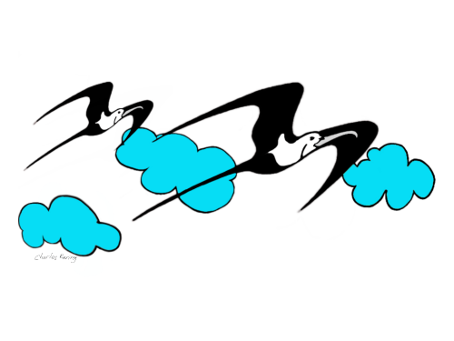
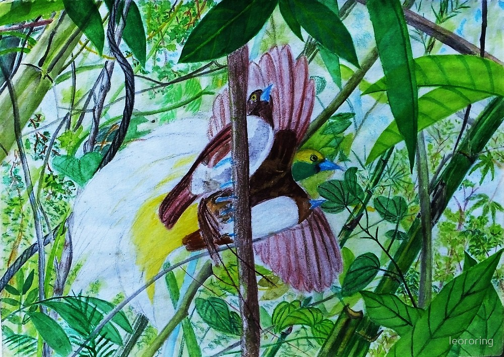

This is the drawing of Pale Blue Monarch (Hypothymis puella). I needed around two weeks to complete it. I did it in my leisure time. This bird lives in tropical rainforest and is endemic to Sulawesi island especially in lowland and lower montane area. Its nest is like a cup. I saw it when I accompanied some birdwatchers from Taiwan who spent 1 week hiking and birdwatching in North Sulawesi. We were looking for Maleo in Tambun forest when this little bird suddenly flew to a tree in front of us. It hopped from one branch to another looking for flies and other small insects in the surrounding trees.
Pale Blue Monarch, as well as other tropical birds in the rainforest, is important in preserving rainforest. Insect eating birds help control the population of insect that could be harmful to the rainforest ecosystem. If there is too much insect in the forest, the leaves of the plants will be denuded. Birds also disperse seeds from fruits which they eat to all corners of the forest. The seeds will grow into a new plants.
I also saw Pale Blue Monarch in Tangkoko Nature Reserve in the province of North Sulawesi. It was a great site for birding and wildlife watching. I usually bring my Visionking 10×42mm binoculars when I go into the forest to watch birds.
Drawing of Lesser Frigatebird Colored Pencil Drawing of Lesser Birds of ParadiseI make the drawing of this bird to raise awareness among all of us about the importance of preserving our nature especially forest. CO2 gas that we release into the atmosphere from our cars, motorcycles, and house hold stoves is absorbed by plants. During photosynthesis, the plants release Oxygen that all living creatures need into the air.
In addition to Pale Blue Monarch, I also created several drawings of other birds that I saw when I guided tourists in the forest and islands. Some of them include Lesser Birds of Paradise and Lesser Frigate Birds. The former is a rainforest bird whereas the latter is a seabird. I like to use watercolour pencils for my drawings but I also use Autodesk Sketchup to make digital artworks. The sea and the forest have been the sources of my art inspirations. The drawings are now available in prints on a lot of products such as mugs, t-shirts, iPhone or Samsung Galaxy skins, draw-string bag, and etc. Please, visit my Redbubble shop: Nature Art to have a look at them.
Bird and Wildlife Watching Tour
Bird and Wildlife Watching tourism is considered as an alternative income generation for villagers who live close to the forest. Villagers could work as guides, cooks and porters when a tour is conducted in the forest near their village. They could also sell food materials such as vegetables, fruits and sweet potatoes to tourists who stay for several days.
Based on this concept, I offer birdwatching tours to visitors who are interested in watching birds in West Papua, Sulawesi and Halmahera island of Indonesia.